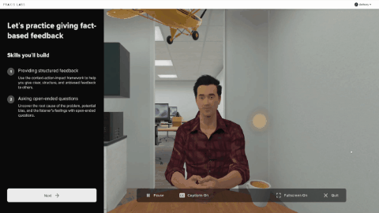
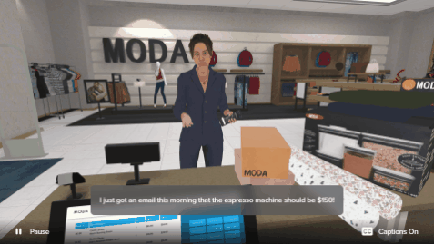
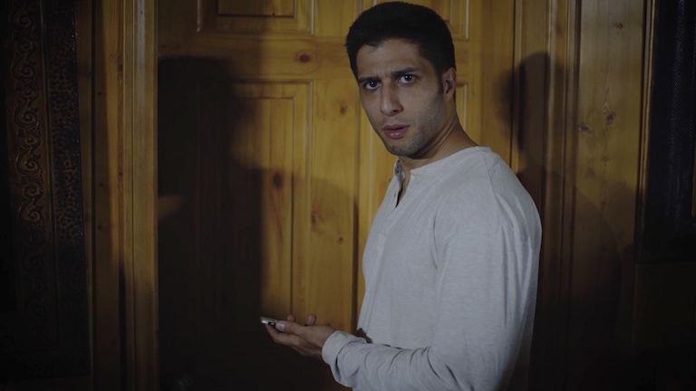
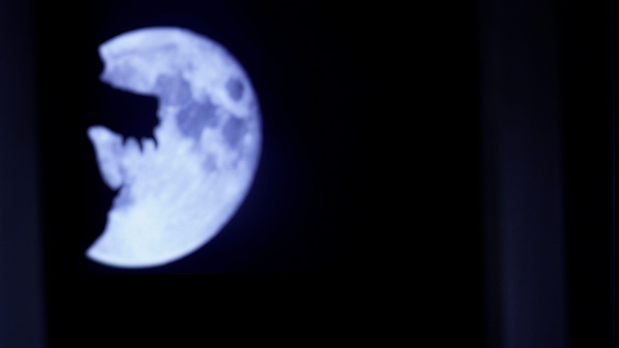

stepping into your vision
About

Programming | Audio | Development
video games and film
Greetings! Thank you for visiting my portfolio site!
Experience
I am a Software Developer with 6+ years of experience building various types of applications: VR, websites, video games, automation and data applications to name a few. I enjoy all types of programming, but my expertise is in game-engines and C# .Net applications.
Approach
Having started out in the audio arts, I have a many years of experience in audio and sound design for both immersive experience and film projects. Since audio and technology complement each other when it comes to any type of immersive medium, I am grateful to have professionally worked in both of these roles. They have stretched both my artistic and technical ways of thinking, and have increasing my ability to see things from different angles and perspectives.
Engagement
I am neurodivergent and curious about all types of topics, including technology and how it can be used to craft a good story. I enjoy collaborating with others, and also do well owning and thinking through problems on my own. I love playing and creating video games. If you need a programmer, implementor, audio designer and/or editor for your project, let me jump in! I'll bet we can make some amazing things together.
Projects
-

Pivotal Experiences
Senior Developer & Audio Lead
Unity, WebGL, C#, mobile, AWS
- Praxis Labs
- Year : 2021 - 2024
- all audio design, processing and integration, asset implementation, programming and development, testing, animation integration, Timeline, deployment
Praxis Labs, a Learning and Development (L&D) startup builds research-backed immersive training experiences to high-impact enterprise customers. Its mission is to make workplaces, and ultimately society, more equitable. I was a Unity developer on the engineering team, and became the Audio Lead within a few weeks of working there. I programmed features and tools, implemented asset, and handled all audio for the development of this product's thirteen playable experiences. While working on this product, I was promoted to Senior Developer and was responsible for collaboration with all departments to ensure quality and timely deployment from AWS onto WebGL.
-

Pivotal Experiences VR
Developer & Audio Lead
Unity, C#, VR, Quest, AWS
- Praxis Labs
- Year : 2021
- audio, asset implementation, programming and development, testing, animation integration, Timeline
The VR version of Pivotal Experiences with hand tracking for the Quest headset.
-

Pivotal Practice
Senior Developer
AI, Unity, C#, WebGL, AWS
- Praxis Labs
- Year : 2024
- AI implementation, audio processing, asset implementation, programming and development, testing, Timeline
Praxis Labs moved onto building a new product suite that uses AI to train employees. I implemented AI technology and built a few of these training modules almost entirely on my own.
-

Frontline Demo
Senior Developer
Unity, C#, JavaScript, Needle Engine, WebGL
- Praxis Labs
- Year : 2023
- programming and development, testing, Timeline, audio nodes in WebGL
A prototype made with Needle Tools to expand training offerings for frontline workers. Developed by Praxis Labs. The engineering team used this project to explore Needle Engine, a framework for making 3D web (including mobile web) experiences with Unity. I explored and researched how WebGL, Three.js, and Needle worked together to create the audio system. I also extended some of Unity's code to properly handel how the Audio Context system comes online when on the web.
-

Unbeaten Path
SFX Designer & Editor
Short Film
- Director : John Holowach
- Year : 2016
- audio editing, sfx
WARNING: Not for young viewers! Explicit Language! Graphic images! A horror-western short, with lots of crunchy gore audio. This was a lot of fun to work on, it and went on to win the Award of Merit at the 2016 Indiefest Film Awards in Los Angeles. You can see the entire short right here.
-

Medal of Honor
Audio Implementor
Unreal, PC, consoles
- Developer : Electronic Arts
- Year : 2010
- sound design, recording, foley, audio implementation into scenes, assets, and animation
In 2010, I had the privilege to work under some of the most talented individuals in the game audio industry. I had a contract gig with EA as an audio integrator for the modern release of Medal of Honor, which went on to be nominated for several audio awards. Working on this project with that amazing audio team taught me a lot about game audio and game development. It was an experience I continue to pull from in my creative pursuits.
-

Unbeaten Path
Audio Director
Audio Feature
- Director : John Holowach
- Year : 2015
- sound design, sfx, audio restoration, dialogue editing and clean up
The idea behind this project was to Narrate an entire script like an audiobook, but also include voice actors and detailed sound design. The final project ended up being as long as a full length feature. Every second was accompanied by a soundscape that I got to create. From old-west style gunfights to an avalanche to a monster yeti, this project offered a lot of great sound design opportunities and problem-solving that I thoroughly enjoyed.
-

Master of Shadows
SFX Designer & Editor
Short Film
- Director : Nikka Far
- Year : 2016
- audio editing, sfx
A short about an Iranian boogeyman. A fun scary project, this one had some good bump sfx and creepy kid voices. The film was made for a site in Iran.
-

Nightfall
SFX Designer & Editor
TV Movie
- Director : Nikka Far
- Year : 2016
- audio editing, restoration and clean up, sfx
TV Movie that played in Iran about a young werewolf. I created some extra sound effects to go along with what had already been created. I also removed some audio artifacts to clean up some of the dialogue tracks.
-

Unreal Demo
Sound Design & Implementation
Unreal, PC
- Created by me
- sound design, sfx, audio implementation
I made this demo by replacing the sound effects in the video game with my own. I set up audio triggers and created every sound in the demo. The music is also my creation, but was not integrated into the game but was added to the video of the recorded gameplay.
Services
Programming
C#, JavaScript, jquery, HTML, CSS
.Net, MVC, fullstack, tools, features
Integration
Unity, Needle, WebGL, VR, PC, console
Audio
SFX, ambience, Foley, dialogue recording, field recording, asset repair, cleanup, editing, mixing
Music
composition, tracks, stems, MIDI